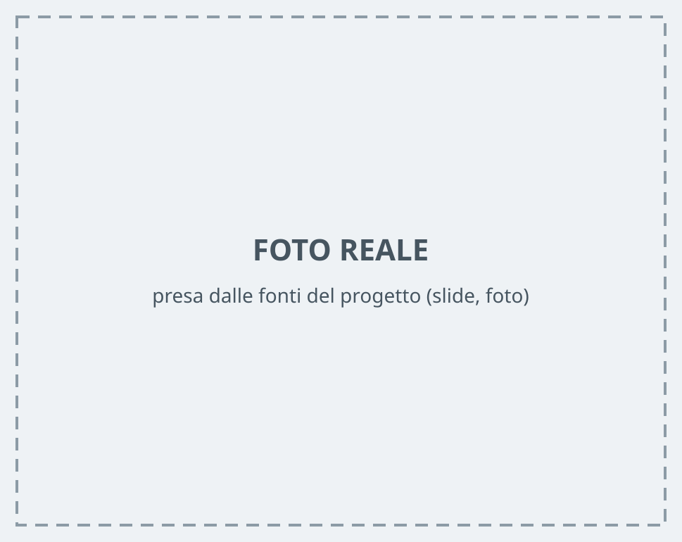

Capitolo 3.2
Impianto elettrico dal contatore alle camere
Cosa ottieni
Sai leggere il quadro, sai cosa scatta e perché, e puoi guidare l'ospite al telefono.
Come funziona
La corrente entra dal contatore. Passa dal quadro elettrico. Dal quadro partono le linee che vanno alle camere. Ogni pezzo protegge qualcosa di diverso.
La strada della corrente
Fase: marrone, nero o grigio — porta la corrente
Neutro: blu — la riporta indietro
Terra: giallo-verde — è la sicurezza
Dal contatore arrivano cavi da 6 mm², per le luci di solito 1,5 mm², per le prese 2,5 mm².
Passi
- Trova il contatore. Stacca se in casa si usa troppa corrente tutta insieme.
- Apri il quadro. Il primo interruttore a sinistra è il generale. Spegne tutta la casa.
- Trova i differenziali. Sono i salvavita. Hanno il tasto «T».
- Premi il tasto «T». Il salvavita deve staccare. Se non stacca, chiama l'elettricista.
- Leggi le zone. Una levetta per zona: luci, prese, cucina, bagno.
- Etichetta ogni levetta. Servono circa 10 minuti con un'etichettatrice.
- Fotografa il quadro. Metti la foto nel manuale della casa. La mandi all'ospite se chiama al buio.
- Controlla la messa a terra presa per presa. Usa un rilevatore. Una presa senza terra: elettricista, dichiarazione di conformità, niente ospiti finché non è risolto.
